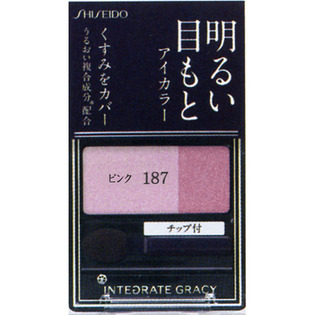

返回列表
产品名称：インテグレート グレイシィ アイカラー ピンク187

資生堂 インテグレート グレイシィ アイカラー ピンク187 ＰＫ１８７
メーカー 資生堂
JANコード 4901872328307
商品の特徴
明るい目もと
くすみをカバー
うるおい複合成分配合
成分・分量
-
用法及び用量
＜使用方法＞
○指先またはチップに適量とり、まぶたに軽くのばします。
1．ライトカラーをまぶたに軽くのばします。
2．アクセントカラーを目尻から中央にかけてぼかします。